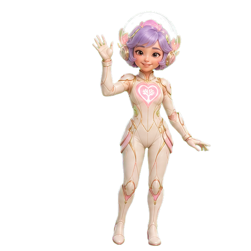

PROGRAM 01 · PERSONAL OBJECT
Memory Capsule
최애의 모습과 내 문장을 빛나는 소장품에 담아 360°로 돌려봅니다.

PROGRAM 02 · MEMORY ANATOMY
Memory Stack
영상, 인물, 의상, 감정, 메모와 연결을 층별로 분해하고 다시 한 이야기로 조립합니다.
Hello.
I’m LUMI,
your memory keeper.
I’m LUMI,
your memory keeper.

PROGRAM 03 · GUIDED JOURNEY
Tree Keeper
러브트리 오리지널 캐릭터 LUMI와 함께 업로드부터 피규어, 개화까지 진행합니다.